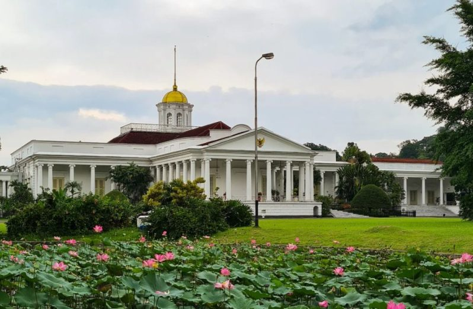

Buitenzorg

Kota Bogor memiliki sejarah panjang yang berakar dari masa Kerajaan Sunda Pakuan Pajajaran. Namun, wajah kota ini mulai terbentuk jelas pada masa kolonial Belanda. Gubernur Jenderal Gustaaf Willem Baron van Imhoff terpesona akan keindahan alam wilayah ini dan memberinya nama "Buitenzorg", yang berarti "tanpa kekhawatiran" atau "tempat yang damai".
Pada tahun 1817, Caspar Georg Carl Reinwardt mendirikan s’Lands Plantentuin yang kini kita kenal sebagai Kebun Raya Bogor. Keberadaan Kebun Raya dan Istana Bogor menjadikan kota ini pusat penelitian botani tropis terkemuka di dunia dan tempat peristirahatan favorit para petinggi negara hingga saat ini.